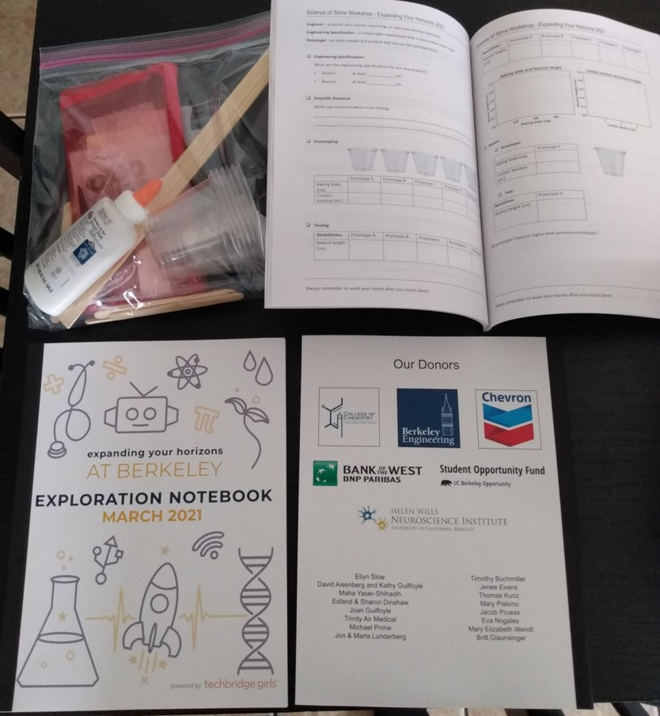
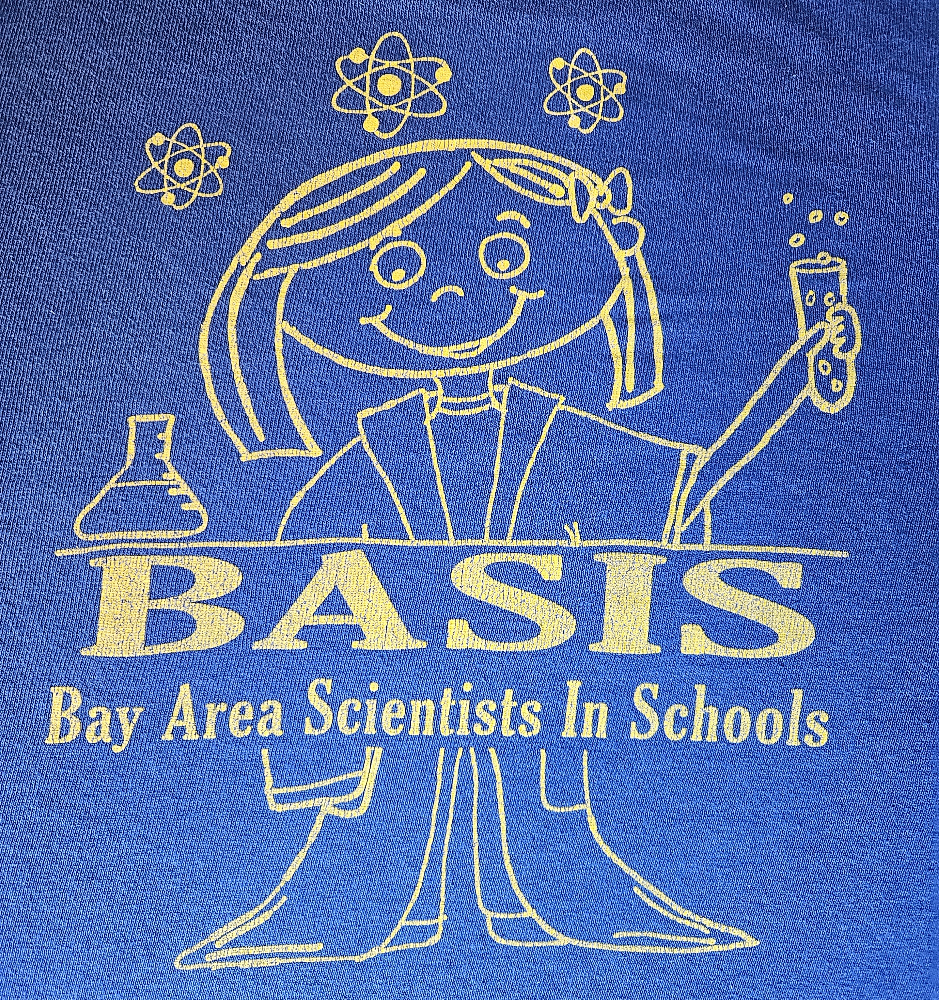

SCIENCE COMM & OUTREACH

Expanding Your Horizons at Berkeley
Annually led a committee of 3-8 volunteers and collaborated with ~10 other committee chairs to host a STEM conference for middle schoolers, impacting 900+ students over 3 yrs.

Bay Area Scientists in Schools
Led a team of 7 graduate students in conducting pedagogic science demonstrations for a total of ~400 fifth grade and kindergarten students in 15 classrooms.